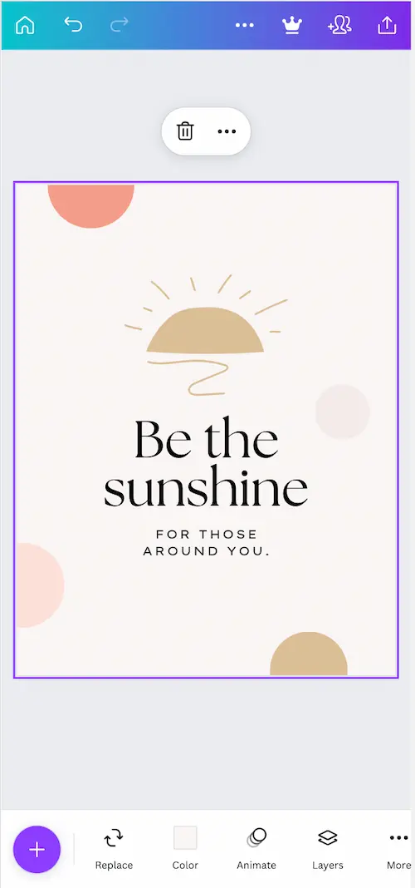
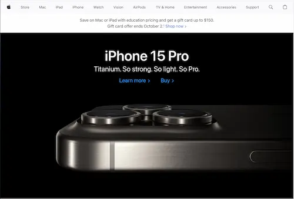

Principle: Hick's Law
Canva
https://www.canva.com Canva is a great example of Hick's Law. Hicks law states that with more choices, decision time and cognitive load increases. The idea is if a site is designed to reduce decisions and complexity the user's experience is greatly improved. This can happen by reducing necessary choices, simplifying tasks into smaller quick to understand steps, and offering recommendations. Canva is a design suite that offers high quality, but in an extremely easy to use interface. Unlike some editors, Canva limits the amount of options, but povides a really rich set of defaults and recommendations to help a user quickly create high quality designs. Options are simple, the user only needs to click the plus (+) button and is offered options to add to the design. If the user chooses text for instance, they are then offered a few suggestions. Canva is quick to learn for beginners allowing professional looking posters to be created in minutes, but also packs some really great features for those who decide to venture further.
Principle: Rule of Thirds
Canvas
https://www.instructure.com/canvasMany sites are built upon the rule of thirds. The rule of thirds is described as creating a flow and asthetic by working with the natural expectation of how we consume information. It was noted through studies that the Rule of Thirds represented the most pleasing imagery. The understanding that halves were too bold and large and anything greater than thirds created too small of spaces pushed too far. Thirds however, created a harmonius design that focuses on a one-third to two-thirds division or vice-versa.
Canvas emulates this rule by focusing the most important features of the program in the first vertical third followed by a more relaxed view and imagery for the remaining two-thirds of the site. We are presented with Education body in the top right, followed by the options we need the most at the left and then move along the site from left to right we then see larger tiles that represent the courses and finally a reference To-Do tool to refer to once the user has moved through the journey of the site.
Principle: White Space and Clean Design
Apple
https://www.apple.com/ When I think about a site that really shows off this principle Apple takes it. Apple sites, devices and user experiences makes ample use of "white" space. Another way of understanding this is space that is largely unused and uncluttered. This design creates a very simplified approach that does not overwhelm users, makes it easy to identify information and navigation is a breeze. Although creating a site with appropriate white space and a clean design is actually quite difficult to design, it takes a great deal of thought and planning to know exactly how to execute it for the best user experience that results in less clicks, immediate understanding of the page, and gets the user to the information they need as efficiently as possible.